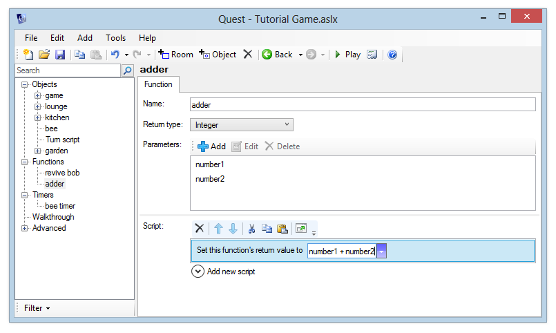
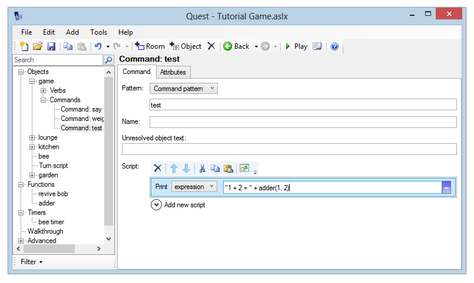

Creating functions that return a value
We’ve already covered Using Functions in the tutorial, where we created a function so that we could call the same script from multiple places.
We can also create functions which return a value. Previously, we called our function from a script command, but when a function returns a value, we can call it from an expression. The function will run, and the return value will be used in the expression.
Hopefully an example will make things clear. Let’s make a simple function that will add two numbers together.
Create a function called “adder” and set its return type to “Integer”. Our function will take two parameters, let’s call them “number1” and “number2”. Add these to the parameters list.
To the script, add a “Set this function’s return value” command. Enter the expression:
number1 + number2
The function editor should now look like this:

We can now call the function from any script command. Let’s add a script command “test” just to check that it works.
In the script for the command, add a “print a message” command, and enter the expression:
"1 + 2 = " + adder(1, 2)
The command should look like this:

Run the game and type “test”. You should get the correct output:
> test
1 + 2 = 3